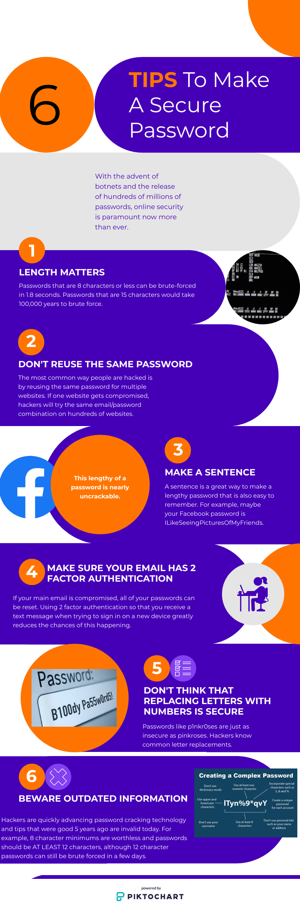

Over the years, technology has been progressing at an increasingly fast pace. This breakneck speed can make it hard to keep up with all the new technologies and systems being introduced literally every day. One new technology that is worth knowing about is solid-state drives, or SSDs. These powerful little drives can offer improved computing power and reliability for a little more money than the regular HDDs.
What is an SSD?
An SSD, or solid-state drive, is a type of computer storage device just like a more common hard drive disk, or HDD. The main thing that sets apart SSDs from HDDs is one thing: speed. A typical hard drive disk works similarly to a very high-tech record player. There is an actuator arm that reads data off of a spinning disk; this is how data is stored and read on a hard drive disk. Some pitfalls that come with the territory of hard drives is that there are many moving parts, which is naturally more likely to break. Another big issue is latency, or the time it takes to process a request. Whenever a request to read data goes through to the hard drive disk, there is some time needed for the actuator arm to find the correct part of the disk and then read the data from here. This time it takes to read the data is felt as “lag” or “latency” by the user. This is where solid-state drives have a large advantage over older generations of HDDs. Instead of having many moving parts, there are no moving parts. Instead of having to read data by bringing a robotic actuator arm to a specific part of a moving disk, the data is read through having a charge or lack thereof present.
Why Use an SSD?
Solid-state drives are not a new technology, they have been around in some shape or form since the 1970s. But what is new about them is the massive drops in price that they have undergone in the last decade. Muthu Dayalan, a senior software developer who studies computer memory out of Chennai, India, says that solid-state drives are an estimated 10-20 times faster than hard drive disks at performing read and write functions. As a user, this will feel like a more responsive and quicker computer. In addition, SSDs are less likely to break due to having fewer moving parts and use less power to operate, saving money in the long run.
Conclusion
For many decades, hard drive disks have been the go-to method for digital storage for the average consumer. Due to major advancements in nanotechnology in the last decade, solid-state drives are cheaper than ever and can provide your personal computer with a more responsive feel without breaking the bank.
Sources:
Dayalan, M. (2019). Research & Analysis on Hybrid Storage: Combining SSDs and HDDs Drive. International Journal Of Research And Engineering, 6(2), 603-606. doi:10.21276/ijre.2019.6.2.5
Just 50 years ago, computers were only used by a handful of people and companies that could afford the outrageous costs associated with them. Nowadays, most people have multiple computers that they use daily. The technology of making computers has come so far that computers and they have become so cheap that computers are embedded into everyday items like toasters, fridges, thermostats, etc. Many of these computers have some sort of password to use or unlock, or if the computer itself doesn’t, then many websites or applications will have a password to unlock. This is where quantum computers could change how we think about and use computers.
Cybersecurity Today
Today, cybersecurity involves using passwords only known by you to manage the accounts of all the various services you use. This cybersecurity is usually thought of as secure because of the enormous number of possibilities for a password. However, even modern computers can try to “brute force” a password by just trying every single combination of letters, numbers, and characters until one works. The issue with doing this is the enormous length of time it takes. Even a simple password of length 8 characters using only lowercase letters would take approximately 2 days to try all possible passwords. As soon as you make your password a little more complex: let’s say 10 characters including numbers, special characters, and both uppercase and lowercase letters; the normal computer will now take over 200,000 years to try all possibilities. This is simply not feasible, and therefore this password is theoretically secure. However, this is where quantum computers come in and change the playing field.
How Quantum Computers Could “Break” Cybersecurity
The strength of quantum computers lies in the way they are created because they do not rely on conventional bits, which can only take on either a 0 or 1, but instead rely on quantum bits or “qubits” which can be a 0, 1, or both simultaneously. Although understanding why qubits can be both a 0 and 1 simultaneously requires a higher knowledge of physics, it is not necessary to understand this paradox to understand how a quantum computer can break cybersecurity today. Because quantum computers can take on both states at once, “brute forcing” a password becomes far easier and quicker. In Mark Horowitz’s book Quantum Computing: Progress and Prospects, the Stanford Computer Science Professor argues that something that would take “trillions of years” to brute force using older technology may be able to be cracked in “less than a month” using quantum computers once they are fully functional. This brings a lot of questions up all at once. What if a quantum computer is created without knowledge of the government, and then is used to crack high profile banking passwords? What if hostile people get access to this technology? How can we trust anything online when there is no more privacy, and anyone can be an impersonator? These questions are what we need to ask ourselves as quantum computing picks up more and more traction.
Other Uses for Quantum Computers
So why would large computing companies like Google and IBM pour so many resources into these quantum computers if they are just going to end up hacking everything? It is because there are a lot of other beneficial services that quantum computers can in theory provide. Dmitry Solenov, a PhD in Physics from Missouri who studies quantum computers believes that the medical system can be vastly improved by the introduction of a quantum computer. Theoretically, a fully functional quantum computer could run through all possible outcomes of a patient’s diagnosis and find the best treatment course to maximize survival rate. These computers could also detect cancer far sooner than medical professionals can detect it nowadays due to increased processing power and pattern recognition. It will likely revolutionize all fields of medicine due to quantum computers’ innate ability to process humongous assortments of data in small amounts of time.
When Will I Get My Own Quantum Computer?
Quantum computing is still very much a frontier technology. It is not fully understood even by experts and while there are small functional quantum computers, they cost hundreds of millions of dollars in equipment and personnel to upkeep. Because quantum computers by nature need to be extremely cold to operate (nearly absolute 0) it is unlikely that average consumers will be able to buy their own quantum computer for their home. Instead, once quantum computers are fully functional, they will likely be a “cloud” service where you can have access to run a program on one via payment plans. With that said, there is currently no timeline for the release of any quantum computers and it is not known how long it will take to make one fully functional and without errors.
Moving Forward
So should we all just panic and never use computers again for anything secure? No, that is not feasible; computers are used for every industry in the world and removing them completely would cause more harm than good. It is important to understand that while these are possibilities, they are not the reality we live in and things could easily change. Maybe a new security system comes about that cannot be so easily hacked into by quantum computers. Or maybe it turns out that industrial-sized quantum computers cannot be made and so all of our would-be worries were for naught. And while there are possible negative effects of quantum computers, there are many effects that will be positive. So keep that head up! The future is coming!
Sources:
National Academies of Sciences, Engineering, and Medicine 2019. Quantum Computing: Progress and Prospects. Washington, DC: The National Academies Press. https://doi.org/10.17226/25196.
Solenov, Dmitry et al. “The Potential of Quantum Computing and Machine Learning to Advance Clinical Research and Change the Practice of Medicine.” Missouri medicine vol. 115,5 (2018): 463-467.